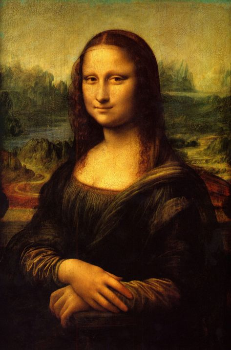
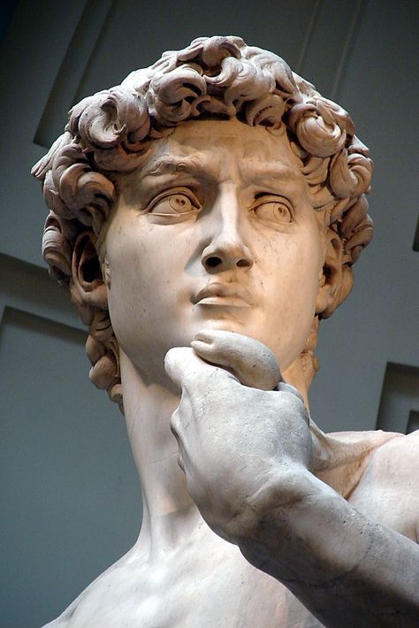

accueil
à propos
portfolio
mon parcours
compétences informatiques
stages réalisés
evennements scientifiques
matieres et projets.html
"iit.html"
passions
quiz
contact
"Chef-d'œuvre Challenge : Testez Vos Connaissances Artistiques!"
1. Qui a peint la "Mona Lisa"?

a. Vincent van Gogh
b. Leonardo da Vinci
c. Pablo Picasso
2. Quel mouvement artistique est associé à Claude Monet?
a. Surréalisme
b. Impressionnisme
c. Cubisme
3. Qui a sculpté "Le Penseur"?
a. Auguste Rodin
b. Michel-Ange
c. Leonardo da Vinci
4. Où se trouve la statue de David de Michel-Ange?

a. Rome, Italie
b. Paris, France
c. Florence, Italie
5. Qui est le pionnier du surréalisme?
a. Salvador Dalí
b. Pablo Picasso
c. Henri Matisse
6. Quel artiste a créé les sculptures "Les Portes de l'Enfer" et "Le Baiser"?
a. Auguste Rodin
b. Vincent van Gogh
c. Claude Monet
7. Quel peintre a créé la "Nuit étoilée"?
a. Vincent van Gogh
b. Claude Monet
c. Pablo Picasso
8. Quelle artiste mexicaine est connue pour ses autoportraits, tels que "Les Deux Fridas"?
a. Frida Kahlo
b. Georgia O'Keeffe
c. Tamara de Lempicka
9. Qui a peint "Les Tournesols"?
a. Vincent van Gogh
b. Claude Monet
c. Pablo Picasso
10. Quel mouvement artistique est associé à Jackson Pollock?
a. Pop Art
b. Art abstrait
c. Action Painting
11. Qui a créé le "Portrait de Dora Maar"?
a. Pablo Picasso
b. Henri Matisse
c. Salvador Dalí
12. Quel mouvement artistique est associé à Andy Warhol?
a. Cubisme
b. Surréalisme
c. Pop Art
13. Qui a peint "Les Joueurs de cartes"?
a. Paul Cézanne
b. Edgar Degas
c. Pierre-Auguste Renoir
14. Où se trouve la célèbre fresque "La Cène" de Leonardo da Vinci?
a. Florence, Italie
b. Rome, Italie
c. Milan, Italie
15. Qui a sculpté "L'Homme qui marche"?
a. Auguste Rodin
b. Michel-Ange
c. Leonardo da Vinci
Valider